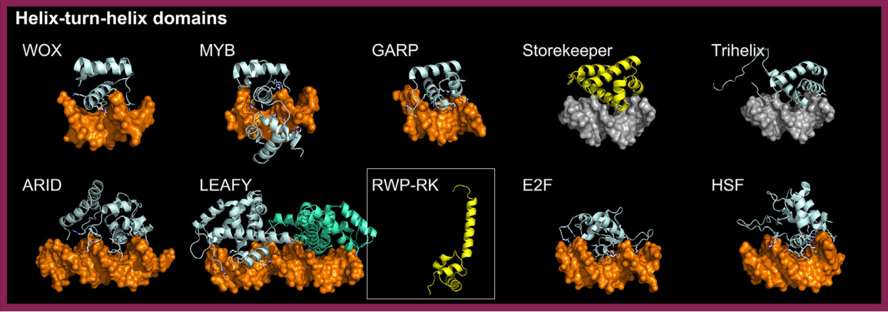

RWP-RK/NLP factors possess a RWP-RK DBD with a basic region predicted to fold into three short and one long alpha-helix (AlphaFold2 model). They bind DNA as dimers. Structural comparisons reveal significant alignment with the HTH motif of the bacterial DNA repair protein Ada (PDB: 1U8B) [src] [src].